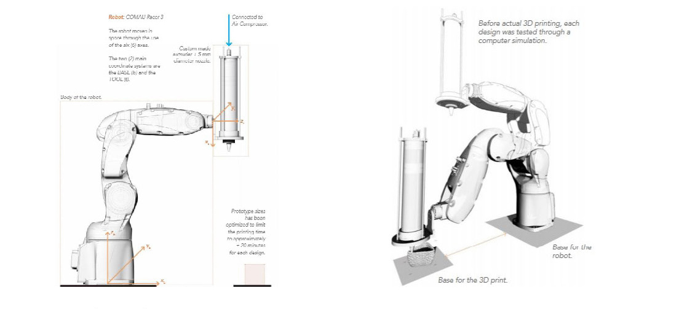
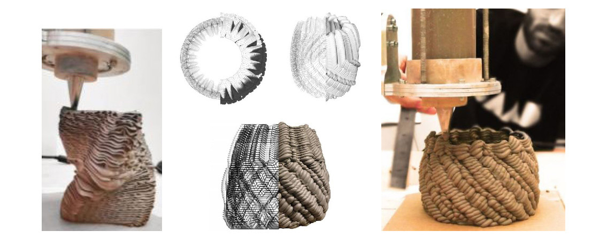
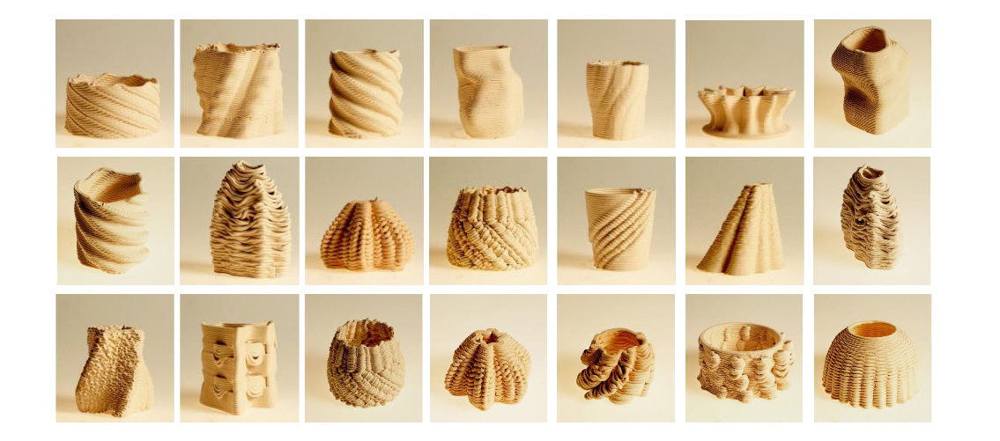
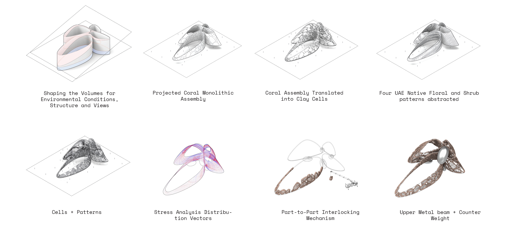
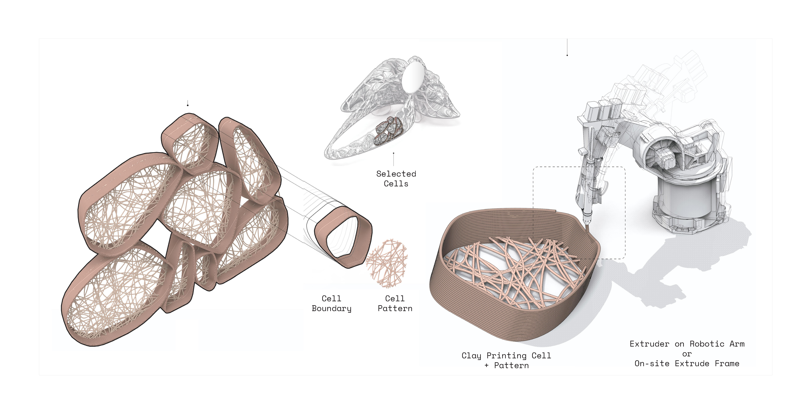
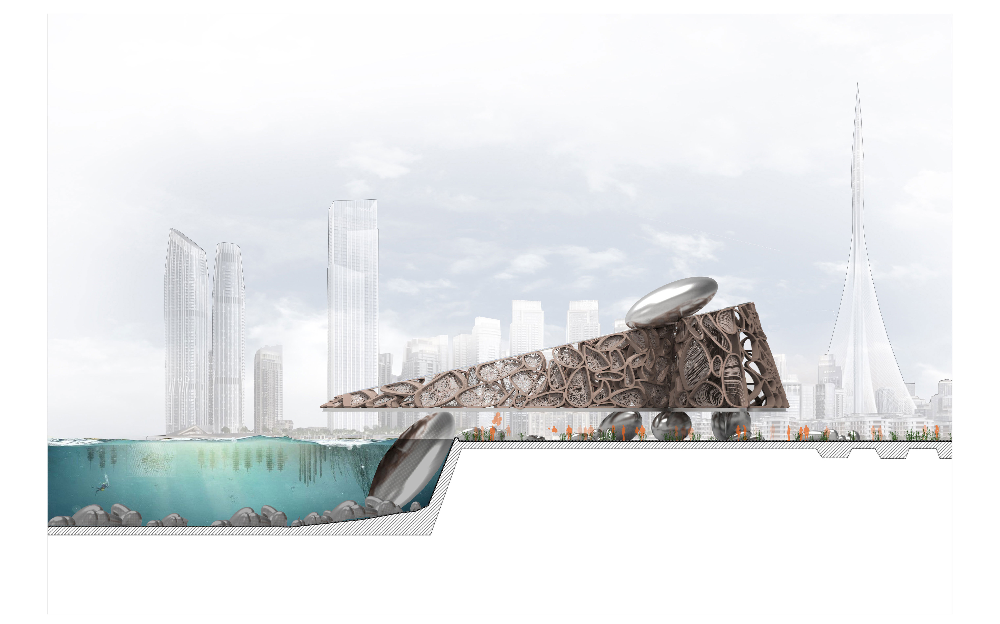

· in.form.ed clay ·
in.Form.ed Clay explores new possibilities of the robots and digital materialization to redefine artifacts design far beyond the predetermined creation of forms. It also sought to question the process and its implication on future possibilities of full-scale design. The aim was to go beyond the current state of prototyping, wherein the physical prototype is a close clone to its digital counterpart, thus making fabrication a purely replication phases. Instead, by coding and embedding additional levels of information aimed at mapping and defining material features and behaviors as well as different deployment patterns, new physical and aesthetic properties emerge, making the production and digital fabrication phase an integral part of the design process.
The fast paced investigation explored code-matter-machine interaction process to create a variety of full scale clay artifacts using robotic 3d printing technology. Contrary to the traditional role of digital fabrication wherein the output is very much a materialized copy of the digital file, the process allowed material properties to interact with the robotic code. This interaction often causes the geometry to display certain behaviors that were neither designed nor coded, but simply emerged out of the negotiation between the different parameters such as material properties, robotic arm speed, layers thickness clay moisture, air pressure, and so on.
Robotic Design & Control Parameters
Extrusions: digital-physical material overlay
Workshop Prints
Cellular Pavilion Design
Fabrication Simulation
Site Relation
Spatial Experience

Copyright Ibrahim Ibrahim - All Rights Reserved
.